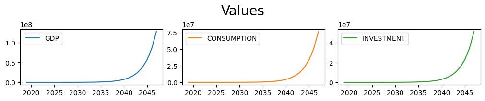
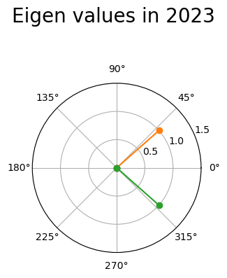
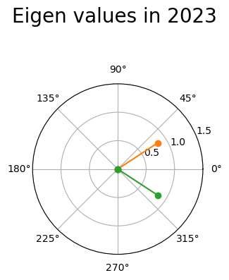

1. Model stability, some background#
Warning
This chapter is both unfinished and unpolished. Suggestions are very welcome.
Warning
Terminology varies very much between fields of study.
from IPython.display import display, HTML, Markdown
latex=1
1.1. A model:#
A model with:
\(\textbf n\) number of endogeneous variables
\(\textbf k\) number of exogeneous variables
\(\textbf r\) max lag of endogeneous variables
\(\textbf s\) max lag of exogeneous variables
\(t\) time frame (year, quarter, day second or another another unit)
can be written in two ways, normalized or un-normalized form
1.1.1. normalized form#
Written in matrix notation where \(\textbf{y}_t\) and \(\textbf{x}_t\) are vectors of endogenous/exogenous variables for time t
The functions are normalized, meaning:
Each endogenous variable is on the left hand side one time - and only one time.
An endogenous variable without lags can not be on the right hand side in an equation, which has the variable on the left hand side.
1.2. The derivatives#
We can express the matrices of derivatives with respect to the endogenous and exogenous variables like this:
1.3. The companion matrix#
To calculate the effect of small perturbations around a solution the derivative matrices can be used.
For simplicity a system with \(r\) (max lag of endogenous variables) of 2 and \(s\) (max lag of exogenous variables) of 1 we have the linearized model:
\(\Delta \textbf{y}_t = \textbf{A}\Delta \textbf{y}_{t} + \Delta E_1 \textbf{y}_{t-1} + \Delta E_2 \textbf{y}_{t-2} + E_3 \Delta \textbf{y}_{t-3} + F_0 \Delta x_t + F_1 \Delta x_{t-1}\)
Rearranging the equation to isolate \(\Delta \textbf{y}_{t}\) on the left side:
\((\mathbb{I}-\textbf{A}) \Delta \textbf{y}_{t} = E_1 \Delta \textbf{y}_{t-1} + \Delta E_2 \textbf{y}_{t-2} + \Delta E_3 \textbf{y}_{t-3} + F_0 \Delta x_t + F_1 \Delta x_{t-1}\)
\(\Delta \textbf{y}_{t} = (\mathbb{I}-\textbf{A})^{-1} E_1 \Delta \textbf{y}_{t-1} + (\mathbb{I}-\textbf{A})^{-1} \Delta E_2 \textbf{y}_{t-2} + (\mathbb{I}-\textbf{A})^{-1} \Delta E_3 \textbf{y}_{t-3} + (\mathbb{I}-\textbf{A})^{-1} F_0 \Delta x_t + (\mathbb{I}-\textbf{A})^{-1} F_1 \Delta x_{t-1}\)
This is a 3th order system of difference equations. In order to be able to find the gain stability of the system it has to be rewritten as 1st order system of difference equations. That is a system with only one lag. Fortunately there is a standard way to do this. It runs as follow:
Using the state vector: \(\textbf{z}_t = \begin{bmatrix} \textbf{y}_t \\ \textbf{y}_{t-1} \\ \textbf{y}_{t-2} \end{bmatrix}\) and \(\textbf{w}_t = \begin{bmatrix} \textbf{x}_t \\ \textbf{x}_{t-1} \end{bmatrix}\)
The system can be expressed as:
\(\Delta \textbf{z}_{t} = \underbrace{\begin{bmatrix} (\mathbb{I}-\textbf{A})^{-1}E_1 & (\mathbb{I}-\textbf{A})^{-1}E_2 & (\mathbb{I}-\textbf{A})^{-1}E_3 \\ \textbf{I} & \textbf{0} & \textbf{0} \\ \textbf{0} & \textbf{I} & \textbf{0} \end{bmatrix}}_{\textbf{C}} \Delta \textbf{z}_{t-1} + \left[\begin{matrix}(\mathbb{I}-\textbf{A})^{-1} F_{0} & (\mathbb{I}-\textbf{A})^{-1} F_{1} \\{0} & {0} \\{0} & {0} \\\end{matrix}\right] \Delta \textbf{w}_t\)
This system is a first order system - and the stability can be evaluated using the matrix:
\(\textbf{C} = \begin{bmatrix} (\mathbb{I}-\textbf{A})^{-1}E_1 & (\mathbb{I}-\textbf{A})^{-1}E_2 & (\mathbb{I}-\textbf{A})^{-1}E_3 \\ \textbf{I} & \textbf{0} & \textbf{0} \\ \textbf{0} & \textbf{I} & \textbf{0} \end{bmatrix}\)
also known as the companion matrix
If the systematic in construction the companion matrix with max lag endogenous variable of 2 can be extended to any numbers of lags.
1.4. Stability and the eignvalues of the companion matrix#
The dynamic behavior can be evaluated by looking at the eigenvalues \(\textbf{e}_{t}\) of the companion matrix \(((I-\bar A)^{-1}\bar E )\). Note that \(\textbf{e}_{t}\) can are complex numbers.
If all \(\lvert \textbf{e}_{t} \lvert < 1\) the system will converge.
If at least one of the eigenvalues is larger than one, the system will amplify.
If at least one \(\textbf{e}_{t}\) has an imaginary part the system will oscillate
dampened if all \(\lvert \textbf{e}_{t} \lvert < 1\) or
amplifying if one \(\lvert \textbf{e}_{t} \lvert > 1\).
The eigenvalues and associated eigenvectors of a model can be calculated using the method .get_df_eigen_dict(), which returns a dictionary where the key is the year and the value is a dataframe the first row of which is the eigenvalues of the model in that year and the following rows are the eigenvectors.
The function eigen values and eigen vectors of a model cannot be easily related to individual equations in the model, but do speak to how the interactions within and across equations affects the stability of the model.
1.5. Calculating Eigenvalues and eigenvectors using modelflow#
Modelflow can calculate the derivative matrices \(A, E_i\) and \(F_j\) describd above, the companion matrix and the associate eigenvalues and eigenvectors for any give model.
Below
a simple Samuelson multiplier accelerator model is created.
a function
get_dfis defined that generates a test dataframe with model parameters and variablesa function
geteigenis defined that:use the model to simulate a generated dataframe.
calculates the eigenvalues
display the eigenvalues in a polar coordinate where imaginary values are at the y-axis.
The function also displays the result of the model
optional displays the companion matrix and the non-zero eigenvalues and associate eigenvectors.
1.6. A simple Samuleson multiplier accelerator model#
#Create a multi-line string comprising the equations of the model.
fma = f'''
gdp = consumption+investment
consumption = mul * gdp(-1)
investment = acc * (consumption-consumption(-1)) + exo_investment'''
#Create a model object from the equations (no data yet)
mma = model.from_eq(fma,modelname = 'Accelerator multiplicator model')
mma.drawmodel(png=latex)
1.7. A function which generates a dataframe with values#
The below function will generate some data for the model based on the parameters passed to it. If no parameters are passed (as in the case of the base dataframe at the end of the code block), the default parameters will be used.
def get_df(mul=0.9,acc=0.5,gdp=1000,im=200,years=100):
'Creates imput dataframe to accelerator multiplier model '
df = pd.DataFrame([[gdp]]*years,index=range(2018,2018+years),columns=['GDP'])
df.loc[:,'MUL']= mul
df.loc[:,'ACC']= acc
df.loc[:,'CONSUMPTION']= gdp*mul
df.loc[:,'EXO_INVESTMENT']= im
return df
base = get_df()
base.head()
| GDP | MUL | ACC | CONSUMPTION | EXO_INVESTMENT | |
|---|---|---|---|---|---|
| 2018 | 1000 | 0.9 | 0.5 | 900.0 | 200 |
| 2019 | 1000 | 0.9 | 0.5 | 900.0 | 200 |
| 2020 | 1000 | 0.9 | 0.5 | 900.0 | 200 |
| 2021 | 1000 | 0.9 | 0.5 | 900.0 | 200 |
| 2022 | 1000 | 0.9 | 0.5 | 900.0 | 200 |
1.8. A function which simulate the model and calculates eigenvalues#
This can be ignored if you are not interested in the python implementation
Show code cell content
def geteigen(mul,acc,years=30,show=False,showmore = False):
'''Function which creates a Samuelson Multiplier accelerator model, runs it and
calculates the eigenvalues for the compaignion matrix in order to evaluate stability'''
#Pass the parameters entered to the get_df routine so as to have data and parameters for the model.
baseline_not_solved = get_df(mul,acc,years=years)
baseline = mma(baseline_not_solved,silent=True) # Solve the baseline model
# Retrieve a dictionary with a dataframe with eigenvalues and eigenvectors for each year
eig_dict = mma.get_df_eigen_dict()
display(Markdown(f'**Model where multiplier = {mul} and accelerator = {acc}**'))
display(mma.stability_newton.eigenvector_plot(size=(4,4),per=2023)); # show the eigenvalues
# Show the solution
mma['gdp consumption investment'].plot(top=0.8,title='Values',colrow=3,sharey=False)
if show:
# In this example we only want the values for one year.
# The model is linear and time independent
eig21 = eig_dict[2021]
# Define a function which calculates a list of absolute values when served a dataframe column of complex numbers
compabs = lambda complex: [abs(value) for index,value in complex.items()]
# retain only those columns where the length of the eigenvalues are above 0.0001
eig21out = (eig21.
T. # Transpose as we query and eval on columns
eval('absolute_value=@compabs(Eigenvalues)'). # calculate the absolute value of the eigenvalue
query('absolute_value>=0.0001'). # Select the rows where the abs value is above 0+.0001
drop('absolute_value',axis=1). # We dont need the absolute value anymore, so the column is dropped.
T) # Transpose again.
display(Markdown(f'**Companion matrix**'))
# display(model.compstyle( mma.stability_newton.get_df_comp_dict()[2021]))
display( mma.stability_newton.get_df_comp_dict()[2021])
# display(eig21.style.set_caption('<b>Original eigenvalues and -vectors'))
#display(model.compstyle(eig21out).set_caption('<b>Non zero eigenvalues and -vectors'))
display(Markdown('**Non zero eigenvalues and -vectors**'))
display(eig21out)
return mma.stability_newton
1.9. No amplification#
In this example there is no accelerator effect in the model.
geteigen(mul=0.8,acc=0,show=1);
Model where multiplier = 0.8 and accelerator = 0
Companion matrix
| CONSUMPTION(-1) | GDP(-1) | INVESTMENT(-1) | |
|---|---|---|---|
| CONSUMPTION(-1) | 0.0 | 0.8 | 0.0 |
| GDP(-1) | 0.0 | 0.8 | 0.0 |
| INVESTMENT(-1) | 0.0 | 0.0 | 0.0 |
Non zero eigenvalues and -vectors
| 1 | |
|---|---|
| Eigenvalues | 0.800000 |
| CONSUMPTION(-1) | 0.707107 |
| GDP(-1) | 0.707107 |
| INVESTMENT(-1) | 0.000000 |
1.10. Explosion#
In this version the model is unstable, the accelerator is greater than one and the multiplier large.
geteigen(mul=0.9,acc=2,show=1);
Model where multiplier = 0.9 and accelerator = 2
Companion matrix
| CONSUMPTION(-1) | GDP(-1) | INVESTMENT(-1) | |
|---|---|---|---|
| CONSUMPTION(-1) | 0.0 | 0.9 | 0.0 |
| GDP(-1) | -2.0 | 2.7 | 0.0 |
| INVESTMENT(-1) | -2.0 | 1.8 | 0.0 |
Non zero eigenvalues and -vectors
| 1 | 2 | |
|---|---|---|
| Eigenvalues | 1.500000 | 1.200000 |
| CONSUMPTION(-1) | 0.486664 | 0.588348 |
| GDP(-1) | 0.811107 | 0.784465 |
| INVESTMENT(-1) | 0.324443 | 0.196116 |
1.11. Exploding oscillations#
geteigen(mul=0.6,acc=2,show=1)
Model where multiplier = 0.6 and accelerator = 2
Companion matrix
| CONSUMPTION(-1) | GDP(-1) | INVESTMENT(-1) | |
|---|---|---|---|
| CONSUMPTION(-1) | 0.0 | 0.6 | 0.0 |
| GDP(-1) | -2.0 | 1.8 | 0.0 |
| INVESTMENT(-1) | -2.0 | 1.2 | 0.0 |
Non zero eigenvalues and -vectors
| 1 | 2 | |
|---|---|---|
| Eigenvalues | 0.900000+0.624500j | 0.900000-0.624500j |
| CONSUMPTION(-1) | -0.345134+0.239485j | -0.345134-0.239485j |
| GDP(-1) | -0.766965+0.000000j | -0.766965-0.000000j |
| INVESTMENT(-1) | -0.421831-0.239485j | -0.421831+0.239485j |
<modelnewton.newton_diff at 0x208497df8b0>
1.12. Perpetual oscillations#
geteigen(mul=0.5,acc=2,show=1);
Model where multiplier = 0.5 and accelerator = 2

Companion matrix
| CONSUMPTION(-1) | GDP(-1) | INVESTMENT(-1) | |
|---|---|---|---|
| CONSUMPTION(-1) | 0.0 | 0.5 | 0.0 |
| GDP(-1) | -2.0 | 1.5 | 0.0 |
| INVESTMENT(-1) | -2.0 | 1.0 | 0.0 |
Non zero eigenvalues and -vectors
| 1 | 2 | |
|---|---|---|
| Eigenvalues | 0.750000+0.661438j | 0.750000-0.661438j |
| CONSUMPTION(-1) | -0.283473+0.250000j | -0.283473-0.250000j |
| GDP(-1) | -0.755929+0.000000j | -0.755929-0.000000j |
| INVESTMENT(-1) | -0.472456-0.250000j | -0.472456+0.250000j |
1.13. Dampened oscillations#
geteigen(mul=0.7,acc=1,show=1);
Model where multiplier = 0.7 and accelerator = 1
Companion matrix
| CONSUMPTION(-1) | GDP(-1) | INVESTMENT(-1) | |
|---|---|---|---|
| CONSUMPTION(-1) | 0.0 | 0.7 | 0.0 |
| GDP(-1) | -1.0 | 1.4 | 0.0 |
| INVESTMENT(-1) | -1.0 | 0.7 | 0.0 |
Non zero eigenvalues and -vectors
| 1 | 2 | |
|---|---|---|
| Eigenvalues | 0.700000+0.458258j | 0.700000-0.458258j |
| CONSUMPTION(-1) | 0.494975-0.324037j | 0.494975+0.324037j |
| GDP(-1) | 0.707107+0.000000j | 0.707107-0.000000j |
| INVESTMENT(-1) | 0.212132+0.324037j | 0.212132-0.324037j |
1.14. A Jackknife procedure to attempt to the contribution of each equation to model instability#
The jackknife procedure systematically . This is done by deleting the rows and columns for each equation and record the new eigenvalues.
The idea is to try to identify the equations which contributes most to the total eigenvalues.
The newton object returned above will also contains this operation. The newton.get_eigen_jackknife_abs_select(year) function will return the max absolute eigenvalue when for each equations is deleted. It also returns the eigenvalues when no equation is deleted.
Note
The terminology is loosely coined from Jackknife resampling https://en.wikipedia.org/wiki/Jackknife_resampling.
Contributions to better naming are very welcome.
1.14.1. #
newton = geteigen(mul=0.6,acc=2,show=1)
newton.get_eigen_jackknife_abs_select(largest=2)
Model where multiplier = 0.6 and accelerator = 2
Companion matrix
| CONSUMPTION(-1) | GDP(-1) | INVESTMENT(-1) | |
|---|---|---|---|
| CONSUMPTION(-1) | 0.0 | 0.6 | 0.0 |
| GDP(-1) | -2.0 | 1.8 | 0.0 |
| INVESTMENT(-1) | -2.0 | 1.2 | 0.0 |
Non zero eigenvalues and -vectors
| 1 | 2 | |
|---|---|---|
| Eigenvalues | 0.900000+0.624500j | 0.900000-0.624500j |
| CONSUMPTION(-1) | -0.345134+0.239485j | -0.345134-0.239485j |
| GDP(-1) | -0.766965+0.000000j | -0.766965-0.000000j |
| INVESTMENT(-1) | -0.421831-0.239485j | -0.421831+0.239485j |
Calculating eigenvalues of 3 different matrices takes time, so make cup of coffee and a take a short nap
CONSUMPTION 0.00000
GDP 0.00000
INVESTMENT 0.60000
NONE 2.19089
dtype: float64
The output above shows that the largest eigenvalue of the system is 1.1. so the system is unstable. If either the consumption or GDP equation is deleted the largest abs(eigenvalue) will be 0. So the system will not be unstable. The same goes in the Investment equation is excluded. However in this case the largest abs(eigenvalue) will be 0.6.
So for such a small model the procedure is not very useful. But for larger models it can help identifying rough equations.